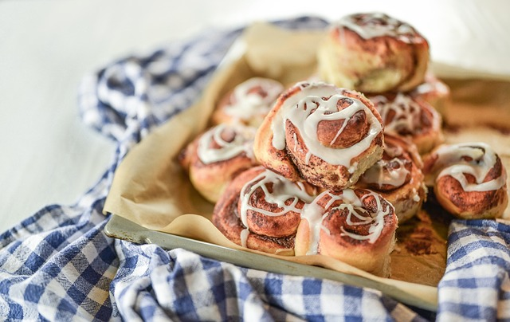

Cinnamon Rolls

Cinnamon rolls are a sweet and aromatic pastry made with a soft, yeasted dough, filled with cinnamon and sugar, and topped with a creamy icing.
They are perfect for breakfast, brunch, or as a treat any time of the day.
Ingredients
- Soft, yeasted dough
- Cinnamon and sugar filling
- Creamy icing
Instructions
- Prepare the dough and let it rise until doubled in size.
- Roll out the dough and spread the cinnamon-sugar filling evenly.
- Cut the dough into individual rolls and place them in a baking pan.
- Bake the rolls until golden brown and cooked through.
- Drizzle with creamy icing while still warm.
Enjoy your delicious and aromatic cinnamon rolls!
index